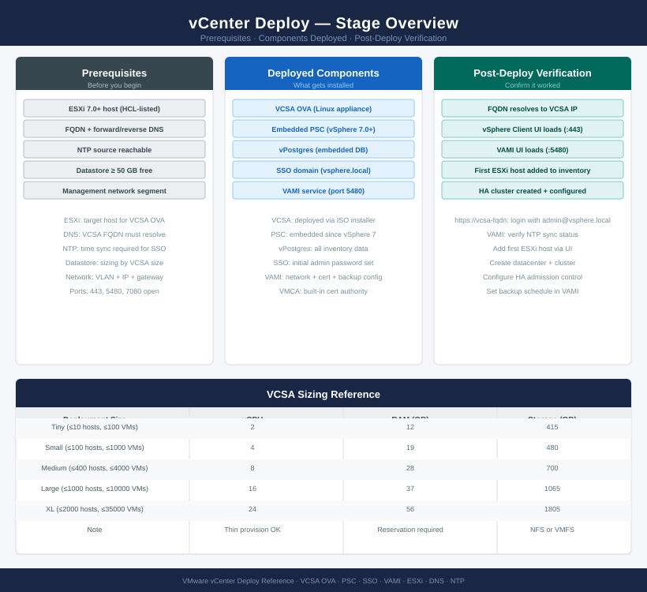
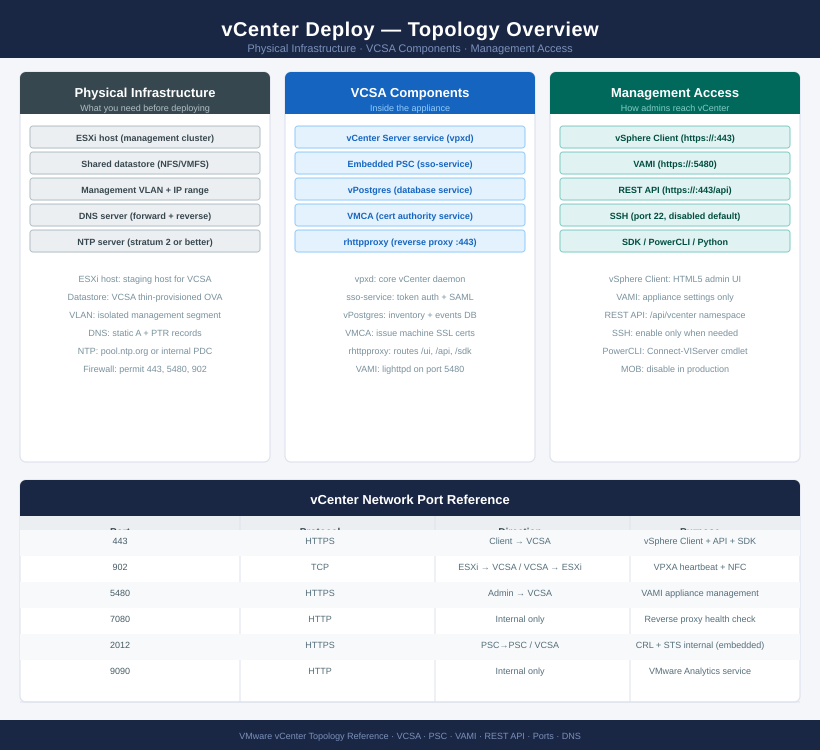

vCenter — Deploy¶


Before you begin¶
- Access: vCenter Administrator role and SSH access to VCSA/ESXi hosts
- Environment: DNS, NTP, and network connectivity verified before starting
- Change management: change request approved; maintenance window scheduled
- Rollback: snapshot or backup taken immediately before deployment begins
- Time estimate: 30–90 minutes — do not start if less than 2 hours are available
Phase 1 — Pre-Deployment Checks¶
Exit criterion: DNS, NTP, datastore space, and credentials verified. No blockers outstanding.
DNS Validation¶
# Forward lookup — VCSA FQDN must resolve before deployment
nslookup vcenter.example.local
# Expected: returns planned VCSA IP
# Reverse lookup — PTR record required for SSO certificate issuance
nslookup <planned-VCSA-IP>
# Expected: returns vcenter.example.local
# Verify from target ESXi host
ssh root@esxi-01.example.local
nslookup vcenter.example.local
# Must resolve from every ESXi host that will be managed
Server: 192.168.1.10
Address: 192.168.1.10#53
Name: vcenter.example.local
Address: 192.168.100.50
Server: 192.168.1.10
Address: 192.168.1.10#53
192.168.100.50.in-addr.arpa name = vcenter.example.local.
root@esxi-01.example.local's password:
Server: 192.168.1.10
Address: 192.168.1.10#53
Name: vcenter.example.local
Address: 192.168.100.50
Common errors
** server can't find vcenter.example.local: NXDOMAIN — Add the FQDN and IP to your DNS server or /etc/hosts on the ESXi host before deployment.
** server can't find 50.100.168.192.in-addr.arpa: NXDOMAIN — Create a PTR record in your DNS reverse zone matching the planned VCSA IP address.
ssh: connect to host esxi-01.example.local port 22 rejected — Verify ESXi host is powered on, SSH is enabled in the ESXi firewall, and the hostname resolves correctly.
NTP Validation¶
# Verify NTP on the target ESXi host
esxcli system ntp get
esxcli system ntp stats
# Both NTP sources should show synchronized
NTP Enabled: true
NTP Servers: 10.20.50.12,10.20.50.13
NTP Running: true
remote refid st t when poll reach delay offset jitter
==============================================================================
10.20.50.12 .POOL. 16 p - 64 0 0.000 0.000 0.000
10.20.50.13 130.207.244.240 2 u 52 64 377 8.234 -1.203 2.156
LOCAL(0) .LOCL. 10 l 998 1024 377 0.000 0.000 0.001
Common errors
Connection refused connecting to Management Agent on 10.20.50.100:443 — Verify the ESXi host is reachable and the vSphere Client has network connectivity to the target host.
NTP Enabled: false — Enable NTP on the ESXi host using esxcli system ntp set --enabled=true and start the service with esxcli system service start ntpd.
reach delay offset jitter (no data rows below header) — Wait 2-3 minutes for NTP to synchronize, or restart ntpd with esxcli system service restart ntpd.
Datastore Space Check¶
| VCSA Size | Max Hosts | Max VMs | Required Disk |
|---|---|---|---|
| Tiny (lab) | 10 | 100 | 415 GB |
| Small | 100 | 1,000 | 480 GB |
| Medium | 400 | 4,000 | 700 GB |
| Large | 1,000 | 10,000 | 1,065 GB |
| X-Large | 2,000 | 35,000 | 1,805 GB |
AD Service Account¶
Confirm the AD bind account is available before Stage 2:
- CN: svc-vcenter (example)
- Permissions: read access to Users and Groups OUs (no write needed)
- Password: meets complexity requirements (8+ chars, upper, lower, digit, special)
Phase 2 — VCSA Deployment: Stage 1¶
Exit criterion: VCSA VM powered on, OS booted, and Stage 2 web wizard accessible at https://<VCSA-IP>:5480.
Mount ISO and Run Installer¶
# On a Windows/Linux/macOS jump host:
# Mount the VCSA ISO
# Launch the UI installer:
# Windows: <ISO>\vcsa-ui-installer\win32\installer.exe
# Linux: <ISO>/vcsa-ui-installer/lin64/installer
# macOS: <ISO>/vcsa-ui-installer/mac/installer.app
Stage 1 Deployment Steps¶
Select: Deploy vCenter Server
Step 1: Select deployment type
→ vCenter Server with Embedded PSC (standard for new deployments)
Step 2: Appliance deployment target
ESXi host/cluster: esxi-01.example.local
HTTPS port: 443
Username: root / Password: <ESXi root password>
Accept host thumbprint: Yes
Step 3: VM configuration
VM name: vcenter-prod
Set root password: <strong password>
Step 4: Deployment size
Select size: Medium (for 400 hosts / 4,000 VMs)
Storage size: Default (expand later if needed)
Step 5: Select datastore
Datastore: <management datastore>
Enable thin disk mode: Yes (recommended for lab/dev; No for production)
Step 6: Network settings
Network: VM Network (management portgroup)
IP version: IPv4
IP assignment: Static
IP address: <planned VCSA IP>
Subnet mask: 255.255.255.0
Default gateway: <gateway>
DNS servers: <DNS1>, <DNS2>
Common gateway: <gateway>
FQDN: vcenter.example.local
HTTP port: 80
HTTPS port: 443
Step 7: Review and finish → Stage 1 deploys (~15 minutes)
Verify Stage 1 Complete¶
# Wait for VCSA VM to appear in target ESXi host inventory
# Power state should be: Powered On
# Test VAMI reachability (Stage 2 wizard)
curl -sk https://<VCSA-IP>:5480 | grep -i "getting started"
# Or open https://<VCSA-IP>:5480 in a browser
% Total % Received % Xferd Average Speed Time Time Time Current
Dload Upload Total Spent Left Speed
100 8642 100 8642 0 0 2847k 0 --:--:-- --:--:-- --:--:-- 0
<title>VMware vCenter Server Appliance</title>
<h1>Getting Started</h1>
<p>Welcome to the vCenter Server Appliance Setup Wizard</p>
Common errors
curl: (7) Failed to connect to 192.168.1.50 port 5480: Connection refused — Verify the VCSA VM is powered on and has completed its initial boot sequence (may take 5–10 minutes).
curl: (60) SSL certificate problem: self signed certificate — The -k flag is already present in the command; if still failing, ensure you're using https:// and not http://.
curl: (6) Could not resolve host name — Confirm the VCSA IP address is correct and the appliance has obtained network connectivity via DHCP or static configuration.
Phase 3 — VCSA Configuration: Stage 2¶
Exit criterion: vCenter services started; vSphere Client accessible at https://<VCSA-FQDN>/ui.
Stage 2 Configuration Wizard¶
Open browser: https://vcenter.example.local:5480
Login: root / <password from Stage 1>
Click: Set Up
Step 1: Appliance configuration
NTP server 1: ntp1.example.local
NTP server 2: ntp2.example.local
Enable SSH: Yes (disable after deployment; needed for initial setup)
Step 2: SSO configuration
SSO domain name: vsphere.local (or use custom domain; cannot be changed post-deploy)
SSO site name: Default-First-Site
SSO password: <strong password — 8+ chars, upper, lower, digit, special>
Step 3: CEIP participation
→ Deselect (or as per org policy)
Step 4: Review and complete
→ Finish — Stage 2 takes ~10 minutes; services start automatically
Verify vCenter Services¶
# SSH to VCSA (as root)
ssh root@vcenter.example.local
# Verify all core services running
service-control --status --all | grep -E "STOPPED|FAILED"
# Expected: no output (all services running)
# Confirm vpxd is healthy
service-control --status vpxd
# Expected: Running
# Check disk usage
df -h
# No partition should be > 80%
# Verify vSphere Client reachable
curl -sk https://vcenter.example.local/ui | grep -i "vsphere"
Connected to vcenter.example.local.
(no output — command completes silently)
vpxd Running
Filesystem Size Used Avail Use% Mounted on
/dev/sda1 50G 28G 19G 58% /
/dev/sda2 100G 67G 28G 69% /storage
/dev/sda3 20G 8G 11G 42% /var/log
tmpfs 16G 512M 15G 4% /dev/shm
% Total % Received % Xferd Average Speed Time Time Time Current
Dload Upload Total Spent Left Speed
100 8234 100 8234 0 0 2847 0 --:-- --:-- --:-- 100%
<!DOCTYPE html><html><head><title>VMware vSphere Client</title>
Common errors
ssh: connect to host vcenter.example.local port 22: Connection refused — Verify VCSA is powered on and SSH is enabled via DCUI, or use the IP address directly if DNS is unresolved.
service-control: command not found — Ensure you are logged in as root and the VCSA shell environment is properly initialized; try source /etc/profile first.
curl: (60) SSL certificate problem: self signed certificate — Remove the -k flag if you have a valid certificate, or ensure the hostname matches the certificate CN; the -k flag bypasses verification for self-signed certs.
Phase 4 — Active Directory Integration¶
Exit criterion: AD identity source added; AD groups mapped to vCenter roles; AD user login verified.
Add AD Identity Source¶
vSphere Client → Administration → Single Sign On → Configuration → Identity Sources
→ Add
Type: Active Directory over LDAP
Name: example.local
Base DN for users: CN=Users,DC=example,DC=local
Base DN for groups: CN=Users,DC=example,DC=local
Domain name: example.local
Domain alias: EXAMPLE
Primary URL: ldap://ad1.example.local:389 (or ldaps://ad1.example.local:636)
Username: EXAMPLE\svc-vcenter (bind account)
Password: <svc-vcenter password>
→ Add
Assign AD Groups to vCenter Roles¶
vSphere Client → Administration → Access Control → Global Permissions
→ Add
Permission 1 (vSphere admins):
User/Group: EXAMPLE\vSphere-Admins
Role: Administrator
Propagate to children: Yes
Permission 2 (read-only):
User/Group: EXAMPLE\vSphere-ReadOnly
Role: Read-Only
Propagate to children: Yes
Verify AD Authentication¶
# Test AD login by opening vSphere Client in an incognito window:
# https://vcenter.example.local/ui
# Login: EXAMPLE\<your-AD-account>@example.local / <AD password>
# Should land in vSphere Client successfully
# Remove default Administrator@vsphere.local global permissions
# after confirming AD admin group has access
Phase 5 — Inventory Build¶
Exit criterion: Datacenter, cluster, and dvSwitch created; all ESXi hosts added and connected; licences assigned.
Create Datacenter and Cluster¶
vSphere Client → right-click vCenter root → New Datacenter
Name: DC-London (or per site naming)
Right-click Datacenter → New Cluster
Name: Cluster-01
DRS: Enable (Fully Automated)
vSphere HA: Enable
vSAN: Do not enable here (enable via vSAN workflow)
Add ESXi Hosts¶
Right-click Cluster-01 → Add Hosts
For each host:
Hostname/IP: esxi-01.example.local
Username: root
Password: <ESXi root password>
Accept thumbprint: Yes
→ Add all hosts in one operation
Create Distributed Switch¶
# vSphere Client → Datacenter → Actions → Distributed Switch → New Distributed Switch
# Name: vDS-Prod
# Version: match ESXi version
# Uplinks: 2
# Default port group: uncheck (create named groups)
Add Hosts to dvSwitch and Create Port Groups¶
dvSwitch → Actions → Add and Manage Hosts
→ Add hosts → assign vmnic uplinks
Create port groups:
PG-Management: VLAN 10
PG-vMotion: VLAN 20
PG-vSAN: VLAN 30 (if vSAN in scope)
PG-VM-Prod: VLAN 100
Assign Licences¶
vSphere Client → Administration → Licensing → Licenses
→ Add licence keys (vSphere, vSAN, NSX as applicable)
Assign vSphere licence to cluster
Assign vSphere licence to each host
Phase 6 — Post-Deployment Hardening and Validation¶
Exit criterion: Backup scheduled, certificates valid, Skyline Health green, alarms configured, syslog forwarding active.
Configure File-Based Backup¶
VAMI: https://vcenter.example.local:5480
→ Backup → Configure
Protocol: SCP (or SFTP / HTTP)
Server: backup.example.local
Port: 22
Directory: /vcenter-backups
Username: vcenter-backup
Password: <password>
Schedule: Daily at 02:00
Retain: 7 backups
→ Save
Replace MACHINE_SSL_CERT (If Required)¶
# SSH to VCSA as root
ssh root@vcenter.example.local
# Check current certificate expiry and issuer
/usr/lib/vmware-vmafd/bin/vecs-cli entry list --store MACHINE_SSL_CERT --text \
| grep -E "Alias|Issuer|Not After"
# If CA-signed cert required, use certificate-manager:
/usr/lib/vmware-vmcad/certificate-manager
# Option 1: Replace MACHINE_SSL_CERT with custom certificate
# Follow prompts; provide signed cert, private key, and CA chain
Connected to vcenter.example.local.
The authenticity of host 'vcenter.example.local (192.168.1.45)' can't be established.
ECDSA key fingerprint is SHA256:aBcD1EfGhIjKlMnOpQrStUvWxYz2A3b4C5d6E7f8G9h.
Are you sure you want to continue connecting (yes/no)? yes
Warning: Permanently added 'vcenter.example.local,192.168.1.45' (ECDSA) to /etc/known_hosts.
root@vcenter [ ~ ]# /usr/lib/vmware-vmafd/bin/vecs-cli entry list --store MACHINE_SSL_CERT --text | grep -E "Alias|Issuer|Not After"
Alias: __MACHINE_CERT
Issuer: CN=CA,O=Example Corp,C=US
Not After: 2026-03-15 14:32:18 UTC
root@vcenter [ ~ ]# /usr/lib/vmware-vmcad/certificate-manager
...
Common errors
vecs-cli: command not found — Ensure you are running the command as root and the vmafd service is running with systemctl status vmware-vmafd.
certificate-manager: command not found — Verify the vmcad package is installed with rpm -qa | grep vmcad and reinstall if missing.
Configure Alarm Definitions¶
vSphere Client → [cluster] → Configure → Alarm Definitions
Add alarms:
- Host connection failure → email + trigger HA
- Datastore usage > 80% → email
- vSAN health degraded → email (if vSAN deployed)
- VCSA certificate expiry → email at 60-day mark
Verify Skyline Health¶
# SSH to VCSA
ssh root@vcenter.example.local
# Run health check
/usr/lib/vmware-vmafd/bin/vmafd-cli get-ls-location --server-name localhost
service-control --status --all | grep -v "Running"
# Expected: all services Running; no STOPPED items
root@vcenter.example.local's password:
"CN=localhost,CN=Services,CN=Configuration,DC=vsphere,DC=local"
service-control --status --all | grep -v "Running"
(no output — all services are running)
Common errors
service-control: command not found — Use the full path /usr/lib/vmware-vmafd/bin/service-control or source the VCSA environment setup script.
"CN=localhost,CN=Services,CN=Configuration,DC=vsphere,DC=local" not found — Verify VCSA is fully initialized and the Lightweight Directory Access Service (LSASS) is running with service-control --status --all | grep vmafdd.
Configure Syslog Forwarding¶
vSphere Client → [vCenter] → Configure → Advanced Settings
config.log.outputToSyslog: true
config.log.syslog.address: udp://syslog.example.local:514
Post-Deployment Checklist¶
| Item | Check |
|---|---|
| DNS | VCSA FQDN resolves forward and reverse |
| NTP | VCSA time drift < 500 ms from ESXi hosts |
| SSO domain | vsphere.local (or custom) configured and login working |
| AD identity source | AD groups log in via vSphere Client |
| ESXi hosts | All hosts Connected in cluster |
| Distributed switch | All hosts migrated to dvSwitch |
| Licences | No licence warnings in vCenter |
| File-based backup | Backup job created and first backup completed |
| MACHINE_SSL_CERT | Valid CA-signed or VMCA cert; not expiring within 30 days |
| Skyline Health | All categories green |
| Alarms | Host disconnect, datastore full, cert expiry alarms active |
| Syslog | vCenter events forwarding to syslog server |
| SSH | SSH disabled on VCSA after setup complete |
See also¶
Verify¶
- vSphere Client: log in at
https://<vcenter-fqdn>/ui— inventory loads and all hosts show Connected - Alarms: Home → Alarms — no critical alarms present after deployment
- Services:
service-control --status --all— all services show RUNNING - Backup: VAMI → Backup — schedule active, first backup completes successfully